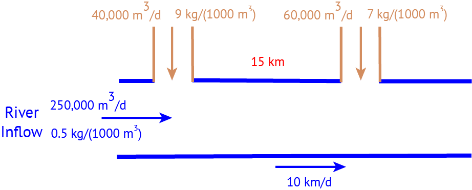

import Pkg
Pkg.activate(@__DIR__)
Pkg.instantiate()BEE 4750 Homework 2: Systems Modeling and Simulation
If you are enrolled in the course, make sure that you use the GitHub Classroom link provided in Ed Discussion, or you may not be able to get help if you run into problems.
Otherwise, you can find the Github repository here.
Overview
Instructions
- Problem 1 asks you to derive a model for water quality in a river system and use this model to check for regulatory compliance.
- Problem 2 asks you to discretize a simple climate model and use it to simulate global mean temperatures under a future emissions scenario.
- Problem 3 (5750 only) asks you to modify the lake eutrophication example from Lecture 04 to account for atmospheric deposition.
Load Environment
The following code loads the environment and makes sure all needed packages are installed. This should be at the start of most Julia scripts.
using Plots
using LaTeXStrings
using CSV
using DataFrames
using RootsProblems (Total: 50/60 Points)
Problem 1 (25 points)
A river which flows at 10 km/d is receiving discharges of wastewater contaminated with CRUD from two sources which are 15 km apart, as shown in the Figure below. CRUD decays exponentially in the river at a rate of 0.36 \(\mathrm{d}^{-1}\).

In this problem:
- Assuming steady-state conditions, derive a model for the concentration of CRUD downriver by solving the appropriate differential equation(s) analytically.
- Determine if the system in compliance with a regulatory limit of 2.5 kg/(1000 m\(^3\)).
Your solution will need to be in terms of distance downriver.
Problem 2 (25 points)
Consider the shallow lake model from class:
\[ \begin{aligned} X_{t+1} &= X_t + a_t + y_t + \frac{X_t^q}{1 + X_t^q} - bX_t, \\ y_t &\sim \text{LogNormal}(\mu, \sigma^2), \end{aligned} \]
where:
- \(X_t\) is the lake phosphorous (P) concentration at time \(t\);
- \(a_t\) is the point-source P release at time \(t\);
- \(y_t\) is the non-point-source P release at time \(t\), which is treated as random from a LogNormal distribution with mean \(\mu\) and standard deviation \(\sigma\);
- \(b\) is the linear rate of P outflow;
- \(q\) is a parameter influencing the rate of P recycling from the sediment.
In this problem:
Make an initial conditions plot for the model dynamics for \(b=0.4\), \(q=2.5\), \(y_t=0\), and \(a_t=0\) for \(t=0, \ldots, 30\). What are the equilibria? What can you say about the resilience of the system?
Finding equilibriaUse
Roots.jlto find the equilibria by solving for values where \(X_{t+1} = X_t\). For example, if you have functionsX_outflow(X,b)andX_recycling(X,q), you could create a functionX_delta(x, a) = a + X_recycling(x) - X_outflow(x)and callRoots.find_zero(x -> X_delta(x, a), x₀), wherex₀is an initial value for the search (you might need to use your plot to find values forx₀near each of the “true” equilibria).Repeat the analysis with \(a_t=0.05\) for all \(t\). What are the new equilibria? How have the dynamics and resilience of the system changed?
Problem 3 (10 points)
This problem is only required for students in BEE 5750.
Consider the lake eutrophication example from Lecture 04. Suppose that phosphorous is also atmospherically deposited onto the lake surface at a rate of \(1.6 \times 10^{-4} \mathrm{kg/(yr} \cdot \mathrm{m}^2)\), which is then instantly mixed into the lake. Derive a model for the lake phosphorous concentration and find the maximum allowable point source phosphorous loading if the goal is to keep lake concentrations below 0.02 mg/L.
References
List any external references consulted, including classmates.